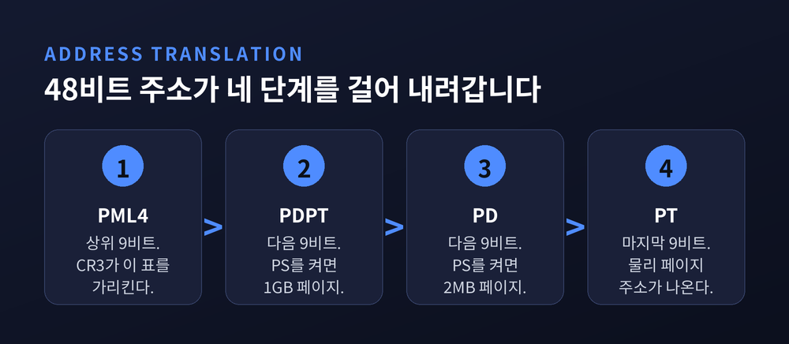
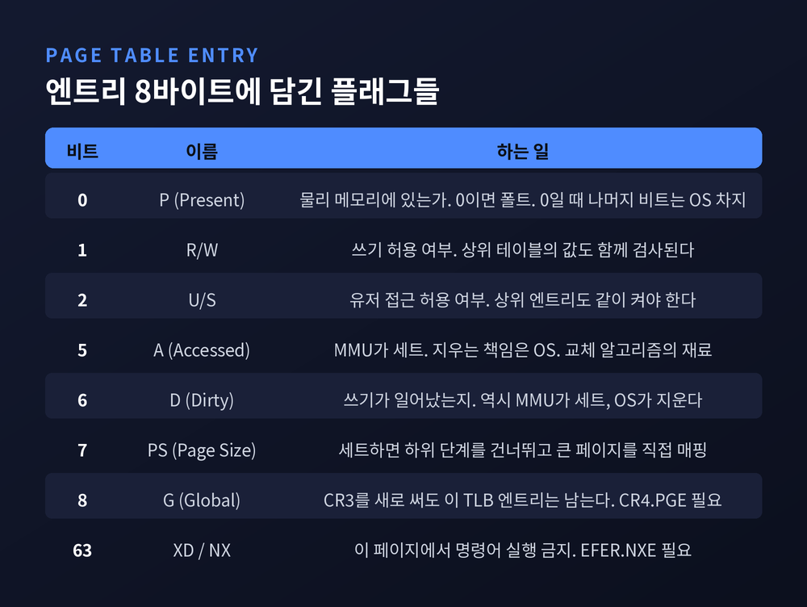
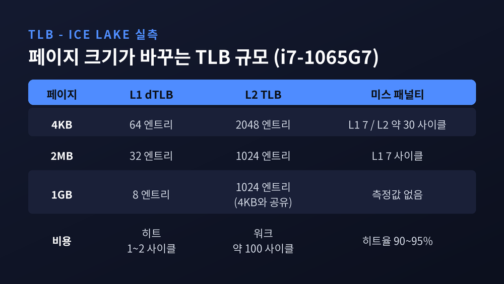
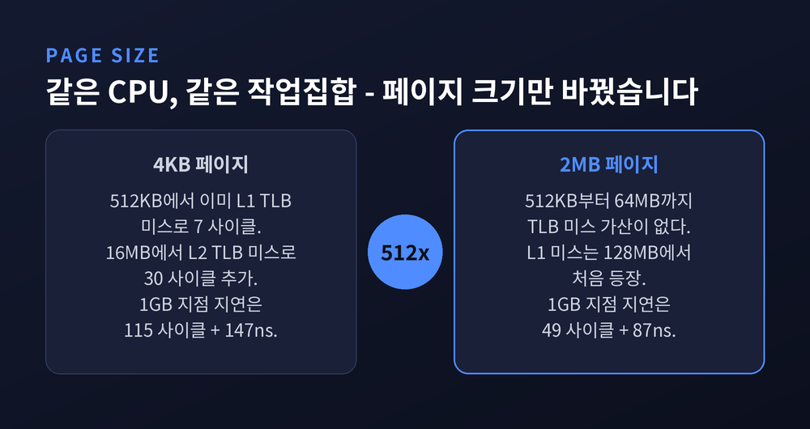
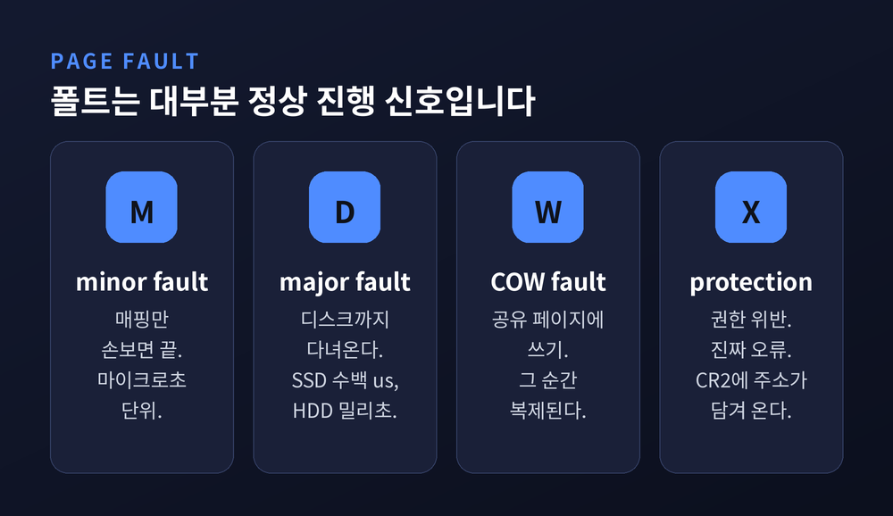
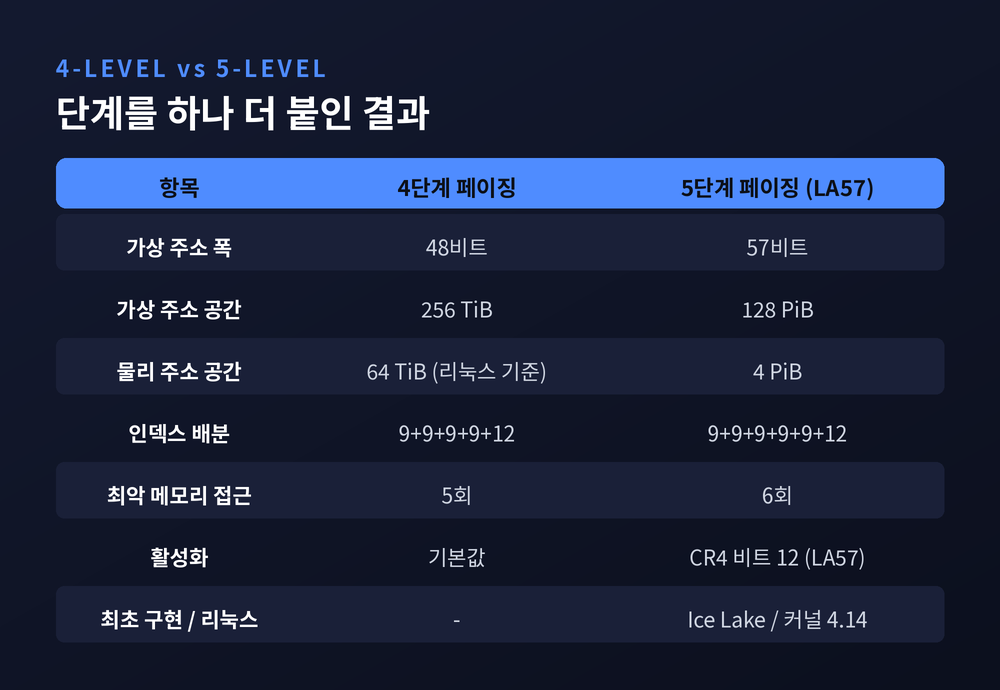

x86-64가 48비트 주소를 네 단계로 번역하는 방식
이번 글에서는 가상 메모리와 페이지 테이블을 정리해 보겠습니다. 프로그램 두 개가 같은 주소를 읽고 쓰는데도 서로의 데이터를 건드리지 않는 이유, 그 번역 장치가 오늘의 주제입니다.
먼저 세 줄로 요약하겠습니다.
출발점부터 정리하겠습니다.
페이징은 각 프로세스가 완전한 가상 주소 공간을 보게 만드는 장치입니다. 물리 메모리가 그만큼 있을 필요도, 전부 올라와 있을 필요도 없습니다. MMU가 그 사이에 서서 가상 주소를 물리 주소로 바꿉니다.
그라츠 공대 운영체제 자료가 이 지점을 한 문장으로 짚습니다. MMU가 주소를 매핑하기 때문에 서로 다른 프로세스가 같은 주소 영역을 쓰는 것이 가능해진다고요.
핵심은 단순합니다. 프로세스마다 최상위 페이지 테이블의 물리 주소를 CR3 레지스터에 따로 걸어둡니다. 주소 0x400000을 읽는 명령은 두 프로세스에서 글자 그대로 똑같습니다. 그러나 걸려 있는 테이블이 다르므로 도착지가 다릅니다.
OSDev 문서의 표현을 빌리면, 한 주소 공간의 가상 주소는 일반적으로 다른 주소 공간에서 같은 데이터를 가리키지 않습니다. 충돌이 안 나는 게 아니라, 애초에 만날 일이 없는 구조입니다.
덤으로 따라오는 것이 보호입니다. 사용자 프로세스는 자기 주소 공간에 매핑된 것만 보고 고칠 수 있습니다. x86-64에서는 이 페이지 단위 보호가 세그먼테이션을 완전히 대체했습니다. IA-32에는 둘 다 남아 있지만 세그먼테이션은 이제 레거시로 취급됩니다.
x86-64의 가상 주소는 이름과 달리 64비트를 다 쓰지 않습니다. 실제로 쓰는 것은 48비트이고, 상위 16비트는 정해진 값을 가져야 합니다.
그 48비트가 이렇게 나뉩니다.
| 구간 | 비트 수 | 역할 |
|---|---|---|
| PML4 인덱스 | 9비트 | 1단계 테이블에서 몇 번째 엔트리인가 |
| PDPT 인덱스 | 9비트 | 2단계 테이블에서 몇 번째인가 |
| PD 인덱스 | 9비트 | 3단계 테이블에서 몇 번째인가 |
| PT 인덱스 | 9비트 | 4단계 테이블에서 몇 번째인가 |
| offset | 12비트 | 4KB 페이지 안에서 몇 번째 바이트인가 |
9 더하기 9 더하기 9 더하기 9 더하기 12, 정확히 48입니다.
숫자가 왜 9와 12인지도 계산으로 나옵니다. 페이지가 4KB이므로 그 안을 가리키려면 2^12 = 4096, 12비트가 필요합니다. 그리고 네 종류의 테이블은 모두 크기가 4KB이고 엔트리 하나가 8바이트입니다. 4096을 8로 나누면 512, 512개를 인덱싱하려면 2^9 = 512, 즉 9비트입니다.
테이블을 페이지 한 장에 딱 맞춘 결과가 9비트라는 숫자인 셈입니다.

걸어 내려가는 순서도 기계적입니다. 최상위 9비트로 PML4 엔트리를 찾습니다. 그 엔트리에는 다음 테이블인 PDPT의 물리 주소가 들어 있습니다. 다음 9비트로 PDPT 엔트리를 찾고, 같은 식으로 PD와 PT까지 내려갑니다. 마지막 PT 엔트리가 물리 페이지의 베이스 주소를 알려주고, 여기에 12비트 offset을 더하면 끝입니다.
중간에 한 단계라도 실패하면 페이지 폴트가 납니다.
의문이 하나 남습니다. 표 한 장이면 될 것을 왜 네 번에 나눠 찾을까요.
OSTEP의 계산이 답이 됩니다. 32비트 주소 공간에 4KB 페이지, 엔트리 4바이트로 평면 테이블을 만들면 엔트리가 2^20개, 크기는 2^22바이트 = 4MB입니다. 프로세스 하나당 4MB입니다. 그마저 커널이 예약한 메모리에 놓아야 합니다. MMU 하드웨어에는 들어가지 않으니까요.
같은 방식을 48비트에 적용해 보겠습니다. 엔트리는 2^36개, 하나가 8바이트이므로 2^39바이트, 512GiB입니다. 프로세스 하나가 쓰지도 않을 주소를 위해 512GiB짜리 표를 들고 있어야 한다는 뜻입니다. 계산해 보면 바로 포기하게 되는 설계입니다.
다단계의 절약은 비어 있는 구간을 통째로 생략한다는 데서 나옵니다. 상위 엔트리의 present 비트를 0으로 두면 그 아래 서브트리 전체를 아예 할당하지 않아도 됩니다. 실제 프로그램의 주소 공간은 코드, 힙, 스택 근처에만 몰려 있고 나머지는 광활하게 비어 있습니다. 희소한 지도에는 희소한 자료구조가 맞습니다.
대가도 정확히 따라옵니다. OSDev 문서가 담담하게 적어둔 문장이 있습니다. 페이징 단계가 하나 늘 때마다 가상 주소 변환은 느려지고, 특히 TLB 미스일 때 그렇다고요.
엔트리 8바이트 중 주소가 차지하지 않는 자리에는 플래그들이 들어갑니다. 이 비트들이 사실상 운영체제의 메모리 정책 전부를 떠받칩니다.

몇 가지만 짚겠습니다.
P(Present) 는 이 페이지가 지금 물리 메모리에 있는지를 표시합니다. 스왑으로 나가면 0이 됩니다. 0인 채로 접근하면 페이지 폴트가 납니다.
R/W 와 U/S 는 권한입니다. 주의할 점은 상위 테이블의 비트도 함께 검사된다는 것입니다. 하나라도 0이면 아래가 아무리 열려 있어도 막힙니다. 유저 페이지를 만들려면 PT 엔트리뿐 아니라 그 위 디렉터리 엔트리의 U/S까지 켜야 합니다.
A(Accessed) 와 D(Dirty) 는 MMU가 자동으로 세트합니다. 접근하면 A가, 쓰면 D가 켜집니다. 그런데 CPU는 이 비트를 지우지 않습니다. 지우는 책임은 운영체제에 있습니다. 이 비대칭이 뒤에서 페이지 교체 알고리즘의 재료가 됩니다.
XD(NX) 는 63번 비트입니다. 세트되면 그 페이지에서는 명령어 실행이 금지됩니다.
그리고 가장 영리한 규칙이 하나 있습니다. P 비트가 0이면 프로세서는 엔트리의 나머지를 전부 무시합니다. 그러니 운영체제는 그 남은 비트를 자기 마음대로 쓸 수 있습니다. 어디에 쓸까요. 그 페이지가 스왑 공간 어디로 갔는지를 적어 둡니다.
스왑 아웃된 페이지의 행방은 별도의 자료구조가 아니라, 무효화된 페이지 테이블 엔트리 그 자리에 기록되어 있습니다.
네 단계를 매번 걸어 내려간다면 메모리 접근 한 번에 메모리를 다섯 번 만져야 합니다. 그래서는 쓸 수가 없습니다.
TLB가 그 자리를 메웁니다. 최근 변환 결과를 캐싱해 두고, 있으면 곧바로 답을 줍니다. TLB 히트는 1~2 사이클, 대략 1나노초 수준입니다. 없으면 page walker가 호출되어 진짜로 테이블을 걸어 내려갑니다. 이 페이지 워크는 약 100 사이클, 워크로드에 따라 20에서 150 사이클 범위로 보고됩니다.
일반적인 TLB 히트율은 90~95% 선입니다. 명령어 TLB는 대부분의 워크로드에서 99%를 넘습니다. 중간 단계 엔트리를 따로 캐싱하는 page walk cache까지 얹히면, 전부 적중했을 때 페이지 워크 비용이 200 사이클대에서 40 사이클대로 내려갑니다.
숫자로 보면 더 분명합니다. 7-cpu.com이 아이스레이크(i7-1065G7)에서 실측한 값입니다.

4KB 모드에서 L1 데이터 TLB는 64 엔트리, 미스 패널티가 7 사이클입니다. 그 아래 L2 TLB는 2048 엔트리, 미스 패널티가 약 30 사이클입니다. 2MB 모드로 가면 L1이 32 엔트리, L2가 1024 엔트리가 됩니다. 1GB 모드에서는 L1이 8 엔트리로 줄어듭니다.
같은 자료에 이런 주석이 붙어 있습니다. 페이지 테이블 워크가 L2 캐시에서 미스하면 느리고, 코어들이 대부분의 경우 페이지 테이블에 L3 캐시를 쓰지 않는 것으로 보인다고요. 번역 비용은 데이터 캐시와 별개의 경로를 탑니다.
무효화 쪽도 만만치 않습니다. INVLPG는 TLB에서 페이지 하나를 지우는 명령어인데, 현재 프로세서의 TLB만 건드립니다. 멀티코어라면 다른 코어에 IPI를 보내 같은 일을 시켜야 합니다. 이것을 TLB shootdown이라 부르고, OSDev 문서는 여기에 "매우 느리다"는 한마디를 붙여 두었습니다.
커널도 정답이 없기는 마찬가지입니다. 리눅스 커널 문서는 전체 플러시와 개별 무효화 사이에서 "본질적으로 '올바른' 지점은 없다"고 적습니다. 그래서 tlb_single_page_flush_ceiling이라는 튜너블을 열어 두었습니다.
x86-64가 지원하는 페이지 크기는 세 가지입니다. 4KB, 2MB, 1GB.
만드는 법은 간단합니다. 엔트리의 PS(Page Size) 비트를 세트하면 그 아래로 더 내려가지 않고 바로 큰 페이지를 가리킵니다. PD 레벨에서 켜면 2MB, PDPT 레벨에서 켜면 1GB가 됩니다. 단계를 건너뛰니 워크도 짧아집니다.
효과는 TLB 커버리지에서 나옵니다. 엔트리 하나가 덮는 범위가 4KB에서 2MB로 가면 512배, 1GB로 가면 262,144배가 됩니다. 같은 수의 엔트리로 훨씬 넓은 영역을 감당합니다.
추상적으로 들리니 실측 곡선을 보겠습니다. 앞서 본 아이스레이크에서, 같은 CPU로 페이지 크기만 바꿔 작업집합을 키워 나간 결과입니다.

4KB 모드에서는 작업집합 512KB에서 벌써 L1 TLB 미스로 7 사이클이 붙습니다. 16MB에서 L2 TLB 미스로 30 사이클이 더 붙고, 128MB에서 다시 18 사이클이 붙습니다. 1GB 지점의 지연은 115 사이클 + 147ns입니다.
2MB 모드에서는 512KB부터 64MB까지 TLB 미스 가산이 아예 없습니다. L1 TLB 미스가 처음 나타나는 지점이 128MB이고, 1GB 지점의 지연은 49 사이클 + 87ns에서 끝납니다.
같은 하드웨어, 같은 작업집합입니다. 바꾼 것은 페이지 크기 하나입니다.
리눅스는 이것을 THP(Transparent Huge Pages)로 자동화합니다. 프로세스는 자기 메모리가 2MB로 매핑되는지 4KB로 매핑되는지 모릅니다. 커널 재량으로 오갈 수도 있습니다. khugepaged 데몬이 흩어진 4KB 페이지들을 스캔해 큰 페이지로 묶습니다. 그래서 이름에 transparent가 붙었습니다.
다만 만능은 아닙니다. THP가 지원하는 크기는 2MB뿐입니다. 1GB는 대상이 아닙니다. 1GB 페이지는 전용 TLB 엔트리 자체가 한 자릿수라 실익이 상황을 탑니다. 설정값도 always, madvise, never 셋 중에서 고르게 되어 있는데, 기본값을 그대로 두는 것이 늘 정답은 아니라는 뜻이기도 합니다.
페이지 폴트라는 말에는 어감이 좀 억울한 구석이 있습니다. 실제로는 대부분 정상적인 진행 신호입니다.
OSDev 문서는 폴트를 두 갈래로 나눕니다. 접근 권한이 있는 프로세스가 낸 pure 폴트와, 보호 위반으로 생긴 invalid 폴트입니다. 그리고 못을 박습니다. pure 페이지 폴트는 에러가 아니다라고요. 핸들러가 매핑을 만들어 주거나 스왑을 처리하면 끝나는 일입니다.
CPU는 폴트를 낼 때 에러 코드를 스택에 얹어 줍니다. 0번 비트가 Present, 1번이 읽기/쓰기, 2번이 유저/슈퍼바이저, 3번이 reserved 비트 위반, 4번이 명령어 페치인지 데이터 접근인지를 알려줍니다. 그리고 폴트를 일으킨 주소는 CR2 레지스터에 담깁니다. 핸들러는 이 둘만 보고 상황을 판별합니다.

비용 차이도 큽니다. 물리 메모리 안에서 매핑만 손보면 되는 minor fault는 마이크로초 단위입니다. 디스크까지 다녀와야 하는 major fault는 SSD에서 수십에서 수백 마이크로초, HDD에서는 밀리초 단위로 보고됩니다. 자릿수가 두세 개 벌어집니다.
이 구조 위에 디맨드 페이징이 섭니다. 프로그램 전체를 시작할 때 올리지 않습니다. 건드리는 순간에만 폴트를 내고, 그때 디스크에서 읽어오거나 0으로 채운 프레임을 붙여 줍니다. 메모리 매핑 파일도 같은 원리입니다. 프로세스는 장치를 직접 읽고 쓰는 것처럼 동작하지만, 실제로는 폴트 핸들러가 뒤에서 블록을 옮기고 있습니다.
메모리가 모자라면 누군가는 나가야 합니다. 여기서 페이지 교체 알고리즘이 등장합니다.
이론상 최적해는 정해져 있습니다. 앞으로 가장 오래 쓰이지 않을 페이지를 내보내면 됩니다. 문제는 완벽한 미래 지식이 필요하다는 점입니다. 실제 시스템에서는 구현할 수 없고, 비교 기준선으로만 씁니다.
FIFO는 가장 먼저 들어온 것을 내보냅니다. 단순한 대신 이상한 성질이 있습니다. 프레임을 더 줘도 성능이 오히려 나빠질 수 있습니다. Belady's anomaly라고 부릅니다. LRU 계열은 그렇지 않습니다. 메모리를 더 주면 항상 같거나 더 낫습니다.
그렇다고 LRU를 그대로 쓰기도 어렵습니다. 페이지마다 마지막 접근 시각을 유지해야 하고, 교체할 때 전체를 훑어 가장 오래된 것을 찾아야 하니까요.
그래서 실무는 근사치로 갑니다. Second Chance, 흔히 Clock이라 부르는 방식입니다. 원형으로 돌면서 후보를 보되, 바로 내보내지 않고 한 번의 기회를 줍니다. 이때 쓰는 재료가 앞에서 본 A 비트입니다. MMU가 켜 두고 운영체제가 지우는, 바로 그 비트입니다.
리눅스는 오랫동안 active와 inactive 두 개의 LRU 리스트로 이 문제를 풀어 왔습니다. 쓰이는 것 같으면 active, 아닌 것 같으면 inactive로 보내고, 회수할 때가 되면 inactive에서 희생자를 고르는 방식입니다.
예전에는 그 두 리스트가 전부였습니다. 지금은 MGLRU가 그 개념을 여러 세대로 일반화해 커널 6.1에 들어와 있습니다. 페이지는 폴트될 때 세대 번호를 받고, 커널이 주기적으로 세대를 늙히며, 회수는 언제나 가장 오래된 세대부터 합니다.
마지막으로 격리 이야기를 마저 하겠습니다.
fork로 프로세스를 복제할 때 메모리를 전부 복사한다면 감당이 안 됩니다. 그래서 copy-on-write를 씁니다. 방식은 놀랍도록 간단합니다. 페이지 테이블 엔트리의 writable 비트를 끄고, 물리 페이지는 참조 카운트로 공유합니다.
복사는 계획된 동작이 아닙니다. 그 비트를 끈 결과로 발생하는 쓰기 보호 폴트의 부수 효과입니다. 실제로 누가 쓰기를 시도하기 전까지는 아무 일도 일어나지 않습니다.
여기서도 한계가 드러납니다. 데이터는 안 복사해도 페이지 테이블은 복사해야 합니다. 퍼듀 연구팀이 커널 메일링 리스트에 올린 패치 설명이 이 지점을 찌릅니다. 현재 fork가 걸리는 시간은 프로세스가 할당한 메모리 크기에 비례한다고요. 이들은 부모와 자식이 마지막 단계 페이지 테이블을 공유하게 하고 참조 카운트로 관리하는 설계를 제안했고, 50GB 환경에서 fork가 최대 270배 빨라졌다고 보고했습니다. 다만 본인들이 밝혔듯 x86 전용에 대형 페이지와 스와핑을 지원하지 않는 프로토타입이고, 메인라인에 들어간 기능은 아닙니다.
그리고 2018년, 이 격리가 실제로 뚫렸습니다. Meltdown입니다.
대응책이 PTI(Page Table Isolation), 옛 이름 KAISER입니다. 방법은 정면 돌파에 가깝습니다. 유저 실행 전용의 페이지 테이블 세트를 따로 하나 더 만듭니다. 시스템 콜이나 인터럽트로 커널에 들어가면 전체 커널 사본으로 갈아타고, 나올 때 다시 유저 사본으로 돌아옵니다. 유저 쪽 테이블에는 진입과 이탈에 꼭 필요한 최소한의 커널 데이터만 남깁니다.
커널 문서는 그 비용을 숨기지 않고 적어 두었습니다. 프로세스마다 PGD가 4KB 더 필요하고, cpu_entry_area가 2MB를 차지합니다. CR3 조작이 모든 진입과 이탈마다 들어가는데 CR3로의 이동은 수백 사이클 수준입니다. 여러 프로세스가 커널 매핑의 TLB 엔트리를 공유하게 해 주던 글로벌 페이지 기능도 잃습니다. 그나마 다행인 것은 그로 인한 실제 성능 손실이 1%를 넘지 않는다는 대목입니다.
주소 공간이 좁아지는 문제도 이미 예고편이 나와 있습니다. 4단계 페이징의 한계는 가상 256TiB, 물리 64TiB인데, 커널 문서가 이렇게 적습니다. "우리는 이미 이 한계에 부딪히고 있다. 오늘날 일부 벤더는 64TiB 메모리를 탑재한 서버를 판다."

답은 단계를 하나 더 붙이는 것이었습니다. CR4의 12번 비트 LA57을 켜면 9비트 기술자가 하나 더 붙어 주소가 57비트가 되고, 공간이 512배 늘어 가상 128PiB, 물리 4PiB가 됩니다. 아이스레이크가 첫 구현이고 리눅스는 4.14부터 지원합니다.
물론 페이지 워크도 한 단계 길어집니다. 최악의 경우 메모리 접근 한 번에 물리 메모리를 다섯 번이 아니라 여섯 번 만져야 합니다.
재미있는 것은 소프트웨어 쪽 사정입니다. 리눅스는 5단계 페이징을 켜도 기본적으로는 47비트 위로 주소를 할당하지 않습니다. 일부 JIT 컴파일러가 포인터의 상위 비트에 자기 정보를 몰래 끼워 넣어 왔는데, 주소가 넓어지자 그게 진짜 포인터와 충돌해 크래시가 나기 때문입니다. 필요한 프로그램만 hint 주소로 명시해서 넓은 공간을 받아 갑니다.
정리하면 이렇습니다.
가상 메모리는 거창한 마법이 아니라 번역표입니다. 48비트 주소를 9·9·9·9·12로 자르고, 4KB짜리 테이블 네 장을 걸어 내려가 물리 프레임을 찾습니다. 프로세스마다 다른 표를 걸어두니 같은 주소가 다른 곳에 도착하고, 그것이 격리의 전부입니다. 네 번 걷는 비용은 TLB가 감춰 주고, 없는 페이지는 폴트를 내서 그때 만들고, 부족하면 오래된 것부터 내보냅니다.
각 조각은 단순합니다. 엔트리 한 줄의 비트 몇 개를 어떻게 쓰느냐로 스왑도, 교체도, copy-on-write도, Meltdown 대응도 전부 설명됩니다.
"프로그램은 주소를 말하고, 페이지 테이블이 그 주소가 무슨 뜻인지 정합니다."
이 구조를 알면 코드가 빨라지느냐고 물으신다면, 대개는 아니라고 답하겠습니다. 다만 프로파일러에 페이지 폴트 수치가 유난히 높게 찍힌 어느 날, 그 숫자가 무슨 말을 하려는지 알아들을 수는 있겠습니다.
참고 소스